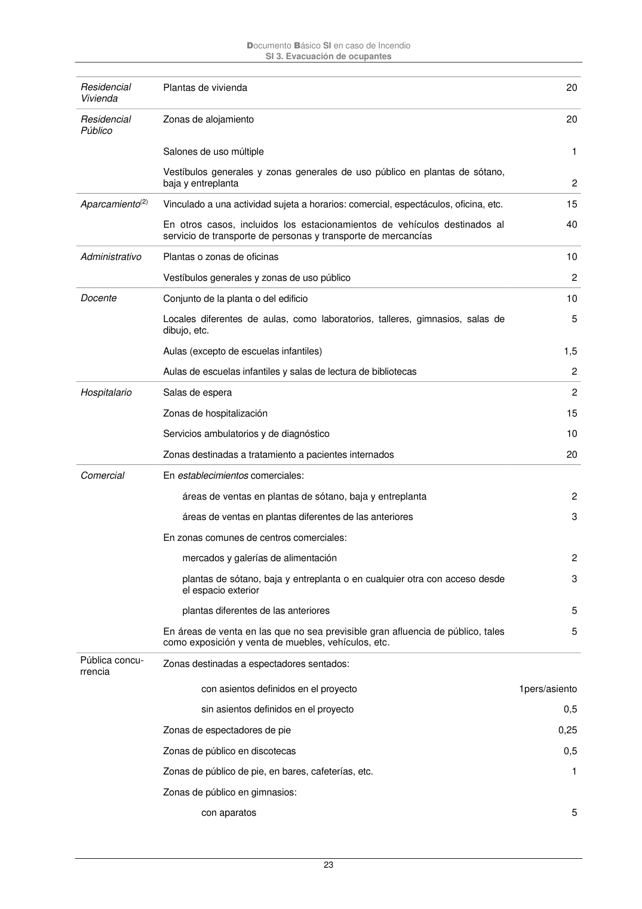

DB-SI · Página 23 · versión 2025-03-04
SHA256: 0a2e78cd62471d9cc5cfe2efbc6aa39fdbad73c124aea7b039f9de96c141e105 · página física 23 de 92 · métodos de encabezado
solo si están cotejados.
Formatos: Markdown · JSON de bloques · PDF p. 23 · imagen PNG
Documento Básico SI en caso de Incendio SI 3. Evacuación de ocupantes 23 Residencial Vivienda Plantas de vivienda 20 Residencial Público Zonas de alojamiento 20 Salones de uso múltiple 1 Vestíbulos generales y zonas generales de uso público en plantas de sótano, baja y entreplanta 2 Aparcamiento(2) Vinculado a una actividad sujeta a horarios: comercial, espectáculos, oficina, etc. 15 En otros casos, incluidos los estacionamientos de vehículos destinados al servicio de transporte de personas y transporte de mercancías 40 Administrativo Plantas o zonas de oficinas 10 Vestíbulos generales y zonas de uso público 2 Docente Conjunto de la planta o del edificio 10 Locales diferentes de aulas, como laboratorios, talleres, gimnasios, salas de dibujo, etc. 5 Aulas (excepto de escuelas infantiles) 1,5 Aulas de escuelas infantiles y salas de lectura de bibliotecas 2 Hospitalario Salas de espera 2 Zonas de hospitalización 15 Servicios ambulatorios y de diagnóstico 10 Zonas destinadas a tratamiento a pacientes internados 20 Comercial En establecimientos comerciales: áreas de ventas en plantas de sótano, baja y entreplanta 2 áreas de ventas en plantas diferentes de las anteriores 3 En zonas comunes de centros comerciales: mercados y galerías de alimentación 2 plantas de sótano, baja y entreplanta o en cualquier otra con acceso desde el espacio exterior 3 plantas diferentes de las anteriores 5 En áreas de venta en las que no sea previsible gran afluencia de público, tales como exposición y venta de muebles, vehículos, etc. 5 Pública concu- rrencia Zonas destinadas a espectadores sentados: con asientos definidos en el proyecto 1pers/asiento sin asientos definidos en el proyecto 0,5 Zonas de espectadores de pie 0,25 Zonas de público en discotecas 0,5 Zonas de público de pie, en bares, cafeterías, etc. 1 Zonas de público en gimnasios: con aparatos 5
